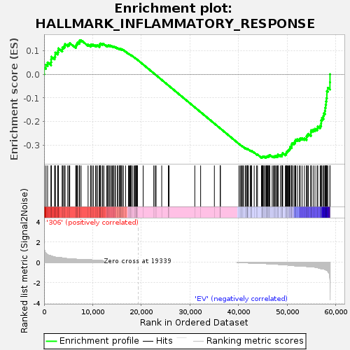
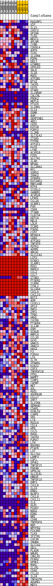
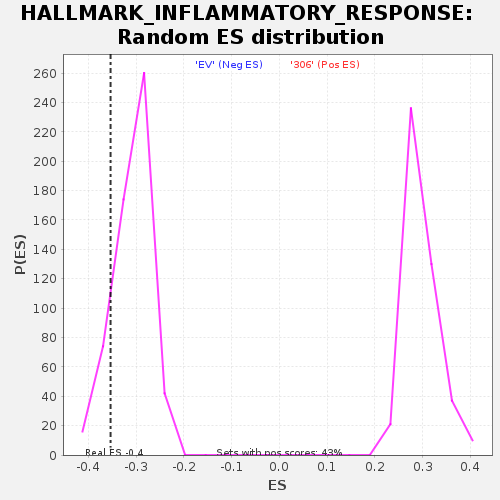

| | | Dataset | 306_EV_express.306_EV.cls#306_versus_EV |
| Phenotype | 306_EV.cls#306_versus_EV |
| Upregulated in class | EV |
| GeneSet | HALLMARK_INFLAMMATORY_RESPONSE |
| Enrichment Score (ES) | -0.35337752 |
| Normalized Enrichment Score (NES) | -1.1472317 |
| Nominal p-value | 0.13250883 |
| FDR q-value | 0.4697585 |
| FWER p-Value | 0.987 |
Table: GSEA Results Summary

Fig 1: Enrichment plot: HALLMARK_INFLAMMATORY_RESPONSE
Profile of the Running ES Score & Positions of GeneSet Members on the Rank Ordered List
| SYMBOL | TITLE | RANK IN GENE LIST | RANK METRIC SCORE | RUNNING ES | CORE ENRICHMENT | | 1 | RASGRP1 | NNN | 20 | 1.462 | 0.0293 | No |
| 2 | VIP | NNN | 376 | 0.875 | 0.0410 | No |
| 3 | IL15 | NNN | 719 | 0.749 | 0.0504 | No |
| 4 | CHST2 | NNN | 1427 | 0.621 | 0.0509 | No |
| 5 | GP1BA | NNN | 1454 | 0.616 | 0.0630 | No |
| 6 | TLR2 | NNN | 1492 | 0.611 | 0.0748 | No |
| 7 | BEST1 | NNN | 2165 | 0.523 | 0.0739 | No |
| 8 | APLNR | NNN | 2290 | 0.505 | 0.0820 | No |
| 9 | CYBB | NNN | 2302 | 0.504 | 0.0921 | No |
| 10 | CDKN1A | NNN | 2793 | 0.475 | 0.0933 | No |
| 11 | AQP9 | NNN | 2896 | 0.472 | 0.1012 | No |
| 12 | TLR1 | NNN | 2941 | 0.470 | 0.1100 | No |
| 13 | IL10RA | NNN | 3736 | 0.427 | 0.1051 | No |
| 14 | PDPN | NNN | 3762 | 0.425 | 0.1133 | No |
| 15 | EBI3 | NNN | 4003 | 0.404 | 0.1174 | No |
| 16 | KCNMB2 | NNN | 4253 | 0.386 | 0.1210 | No |
| 17 | GPR183 | NNN | 4306 | 0.382 | 0.1278 | No |
| 18 | SELE | NNN | 4858 | 0.351 | 0.1256 | No |
| 19 | IL1B | NNN | 5129 | 0.345 | 0.1280 | No |
| 20 | MXD1 | NNN | 5278 | 0.335 | 0.1323 | No |
| 21 | ATP2B1 | NNN | 6520 | 0.303 | 0.1172 | No |
| 22 | BTG2 | NNN | 6596 | 0.298 | 0.1220 | No |
| 23 | TACR1 | NNN | 6651 | 0.295 | 0.1271 | No |
| 24 | CD70 | NNN | 6802 | 0.286 | 0.1303 | No |
| 25 | STAB1 | NNN | 6880 | 0.281 | 0.1347 | No |
| 26 | IL18RAP | NNN | 7240 | 0.274 | 0.1341 | No |
| 27 | CALCRL | NNN | 7264 | 0.274 | 0.1393 | No |
| 28 | PROK2 | NNN | 7322 | 0.274 | 0.1439 | No |
| 29 | MEP1A | NNN | 7616 | 0.274 | 0.1445 | No |
| 30 | PTGIR | NNN | 9050 | 0.259 | 0.1253 | No |
| 31 | IL18R1 | NNN | 9554 | 0.239 | 0.1215 | No |
| 32 | IL1A | NNN | 9614 | 0.238 | 0.1254 | No |
| 33 | OSMR | NNN | 9864 | 0.228 | 0.1257 | No |
| 34 | AHR | NNN | 10157 | 0.217 | 0.1251 | No |
| 35 | SERPINE1 | NNN | 10581 | 0.200 | 0.1220 | No |
| 36 | ABI1 | NNN | 10811 | 0.193 | 0.1220 | No |
| 37 | CD55 | NNN | 10947 | 0.189 | 0.1235 | No |
| 38 | KIF1B | NNN | 11389 | 0.179 | 0.1197 | No |
| 39 | P2RY2 | NNN | 11398 | 0.179 | 0.1232 | No |
| 40 | IL2RB | NNN | 11400 | 0.179 | 0.1268 | No |
| 41 | SLC31A2 | NNN | 11575 | 0.174 | 0.1273 | No |
| 42 | ITGA5 | NNN | 11600 | 0.173 | 0.1304 | No |
| 43 | PTPRE | NNN | 11947 | 0.162 | 0.1278 | No |
| 44 | ATP2C1 | NNN | 12061 | 0.158 | 0.1291 | No |
| 45 | KLF6 | NNN | 12306 | 0.151 | 0.1280 | No |
| 46 | LY6E | NNN | 12857 | 0.137 | 0.1214 | No |
| 47 | ACVR1B | NNN | 13073 | 0.131 | 0.1204 | No |
| 48 | FZD5 | NNN | 13186 | 0.128 | 0.1211 | No |
| 49 | SLC7A1 | NNN | 13204 | 0.128 | 0.1234 | No |
| 50 | IL4R | NNN | 13508 | 0.120 | 0.1206 | No |
| 51 | NFKB1 | NNN | 13563 | 0.119 | 0.1221 | No |
| 52 | SLC28A2 | NNN | 13872 | 0.111 | 0.1191 | No |
| 53 | MYC | NNN | 14033 | 0.107 | 0.1186 | No |
| 54 | SGMS2 | NNN | 14278 | 0.101 | 0.1164 | No |
| 55 | IRAK2 | NNN | 14314 | 0.100 | 0.1179 | No |
| 56 | IFNGR2 | NNN | 14584 | 0.094 | 0.1152 | No |
| 57 | EIF2AK2 | NNN | 14680 | 0.092 | 0.1155 | No |
| 58 | RNF144B | NNN | 15091 | 0.083 | 0.1101 | No |
| 59 | RTP4 | NNN | 15173 | 0.082 | 0.1104 | No |
| 60 | ICOSLG | NNN | 15490 | 0.078 | 0.1066 | No |
| 61 | GABBR1 | NNN | 15505 | 0.078 | 0.1080 | No |
| 62 | ACVR2A | NNN | 15693 | 0.074 | 0.1063 | No |
| 63 | LPAR1 | NNN | 15776 | 0.072 | 0.1064 | No |
| 64 | CCL24 | NNN | 15804 | 0.072 | 0.1074 | No |
| 65 | SCARF1 | NNN | 16012 | 0.067 | 0.1052 | No |
| 66 | PVR | NNN | 16041 | 0.066 | 0.1060 | No |
| 67 | CD69 | NNN | 16325 | 0.063 | 0.1025 | No |
| 68 | ITGB8 | NNN | 16765 | 0.056 | 0.0962 | No |
| 69 | CLEC5A | NNN | 17354 | 0.043 | 0.0870 | No |
| 70 | HIF1A | NNN | 17470 | 0.041 | 0.0859 | No |
| 71 | RELA | NNN | 17638 | 0.037 | 0.0838 | No |
| 72 | LDLR | NNN | 17815 | 0.034 | 0.0815 | No |
| 73 | ICAM1 | NNN | 17855 | 0.033 | 0.0815 | No |
| 74 | PSEN1 | NNN | 17902 | 0.033 | 0.0813 | No |
| 75 | CCR7 | NNN | 18180 | 0.027 | 0.0772 | No |
| 76 | NFKBIA | NNN | 18517 | 0.019 | 0.0718 | No |
| 77 | CD82 | NNN | 18690 | 0.016 | 0.0692 | No |
| 78 | ATP2A2 | NNN | 18833 | 0.013 | 0.0671 | No |
| 79 | TNFSF9 | NNN | 18877 | 0.012 | 0.0666 | No |
| 80 | RIPK2 | NNN | 18982 | 0.010 | 0.0650 | No |
| 81 | ADRM1 | NNN | 19116 | 0.007 | 0.0629 | No |
| 82 | ABCA1 | NNN | 19135 | 0.006 | 0.0627 | No |
| 83 | SLC11A2 | NNN | 19205 | 0.005 | 0.0616 | No |
| 84 | LCP2 | NNN | 20377 | 0.000 | 0.0416 | No |
| 85 | KCNA3 | NNN | 22553 | 0.000 | 0.0045 | No |
| 86 | SLAMF1 | NNN | 22838 | 0.000 | -0.0003 | No |
| 87 | RGS1 | NNN | 23044 | 0.000 | -0.0038 | No |
| 88 | MARCO | NNN | 24195 | 0.000 | -0.0234 | No |
| 89 | CCL2 | NNN | 25574 | 0.000 | -0.0469 | No |
| 90 | CCL7 | NNN | 25575 | 0.000 | -0.0469 | No |
| 91 | ITGB3 | NNN | 25713 | 0.000 | -0.0493 | No |
| 92 | PTGER2 | NNN | 30998 | 0.000 | -0.1394 | No |
| 93 | ICAM4 | NNN | 32198 | 0.000 | -0.1598 | No |
| 94 | CCRL2 | NNN | 35027 | 0.000 | -0.2081 | No |
| 95 | SLC4A4 | NNN | 36221 | 0.000 | -0.2284 | No |
| 96 | CXCL9 | NNN | 36244 | 0.000 | -0.2288 | No |
| 97 | CXCL10 | NNN | 36245 | 0.000 | -0.2288 | No |
| 98 | BST2 | NNN | 40082 | -0.010 | -0.2940 | No |
| 99 | ADM | NNN | 40344 | -0.016 | -0.2982 | No |
| 100 | CX3CL1 | NNN | 40571 | -0.021 | -0.3016 | No |
| 101 | GPC3 | NNN | 40713 | -0.024 | -0.3035 | No |
| 102 | RAF1 | NNN | 40881 | -0.027 | -0.3058 | No |
| 103 | IRF1 | NNN | 41048 | -0.031 | -0.3080 | No |
| 104 | TPBG | NNN | 41476 | -0.039 | -0.3145 | No |
| 105 | HRH1 | NNN | 41479 | -0.039 | -0.3138 | No |
| 106 | CXCR6 | NNN | 41507 | -0.040 | -0.3134 | No |
| 107 | PTGER4 | NNN | 41767 | -0.045 | -0.3169 | No |
| 108 | IL12B | NNN | 41844 | -0.047 | -0.3173 | No |
| 109 | OSM | NNN | 41867 | -0.047 | -0.3167 | No |
| 110 | SCN1B | NNN | 41885 | -0.047 | -0.3160 | No |
| 111 | MMP14 | NNN | 42012 | -0.050 | -0.3171 | No |
| 112 | CCL20 | NNN | 42407 | -0.059 | -0.3227 | No |
| 113 | GCH1 | NNN | 42489 | -0.060 | -0.3228 | No |
| 114 | GNA15 | NNN | 42632 | -0.063 | -0.3240 | No |
| 115 | GNAI3 | NNN | 42695 | -0.065 | -0.3237 | No |
| 116 | HAS2 | NNN | 43216 | -0.076 | -0.3310 | No |
| 117 | F3 | NNN | 43722 | -0.087 | -0.3379 | No |
| 118 | P2RX4 | NNN | 43890 | -0.092 | -0.3389 | No |
| 119 | LCK | NNN | 44708 | -0.098 | -0.3508 | No |
| 120 | IL7R | NNN | 44843 | -0.101 | -0.3510 | Yes |
| 121 | IFNAR1 | NNN | 44876 | -0.102 | -0.3495 | Yes |
| 122 | KCNJ2 | NNN | 44943 | -0.104 | -0.3485 | Yes |
| 123 | CSF3 | NNN | 45034 | -0.106 | -0.3479 | Yes |
| 124 | TNFRSF1B | NNN | 45215 | -0.110 | -0.3488 | Yes |
| 125 | FPR1 | NNN | 45330 | -0.110 | -0.3485 | Yes |
| 126 | NAMPT | NNN | 45617 | -0.117 | -0.3510 | Yes |
| 127 | TIMP1 | NNN | 45690 | -0.119 | -0.3498 | Yes |
| 128 | TAPBP | NNN | 45709 | -0.120 | -0.3477 | Yes |
| 129 | MET | NNN | 45877 | -0.122 | -0.3481 | Yes |
| 130 | AXL | NNN | 45999 | -0.126 | -0.3476 | Yes |
| 131 | ROS1 | NNN | 46031 | -0.126 | -0.3455 | Yes |
| 132 | ADORA2B | NNN | 46212 | -0.131 | -0.3459 | Yes |
| 133 | CCL17 | NNN | 46222 | -0.132 | -0.3434 | Yes |
| 134 | IRF7 | NNN | 46377 | -0.137 | -0.3433 | Yes |
| 135 | IL15RA | NNN | 46424 | -0.138 | -0.3413 | Yes |
| 136 | SEMA4D | NNN | 46915 | -0.151 | -0.3466 | Yes |
| 137 | C5AR1 | NNN | 47178 | -0.157 | -0.3478 | Yes |
| 138 | DCBLD2 | NNN | 47376 | -0.163 | -0.3479 | Yes |
| 139 | C3AR1 | NNN | 47459 | -0.165 | -0.3460 | Yes |
| 140 | SRI | NNN | 47653 | -0.171 | -0.3458 | Yes |
| 141 | LTA | NNN | 47839 | -0.177 | -0.3453 | Yes |
| 142 | RGS16 | NNN | 48065 | -0.184 | -0.3454 | Yes |
| 143 | CD14 | NNN | 48108 | -0.186 | -0.3424 | Yes |
| 144 | HPN | NNN | 48115 | -0.186 | -0.3387 | Yes |
| 145 | CCL5 | NNN | 48593 | -0.204 | -0.3427 | Yes |
| 146 | RHOG | NNN | 48885 | -0.215 | -0.3433 | Yes |
| 147 | TACR3 | NNN | 48918 | -0.216 | -0.3395 | Yes |
| 148 | P2RX7 | NNN | 49003 | -0.220 | -0.3365 | Yes |
| 149 | LYN | NNN | 49084 | -0.223 | -0.3333 | Yes |
| 150 | BDKRB1 | NNN | 49621 | -0.237 | -0.3376 | Yes |
| 151 | PTAFR | NNN | 49781 | -0.241 | -0.3355 | Yes |
| 152 | LIF | NNN | 49829 | -0.243 | -0.3314 | Yes |
| 153 | SLC7A2 | NNN | 49879 | -0.245 | -0.3272 | Yes |
| 154 | LAMP3 | NNN | 50024 | -0.251 | -0.3246 | Yes |
| 155 | CSF1 | NNN | 50165 | -0.256 | -0.3218 | Yes |
| 156 | SPHK1 | NNN | 50306 | -0.264 | -0.3188 | Yes |
| 157 | TNFSF15 | NNN | 50464 | -0.272 | -0.3159 | Yes |
| 158 | PDE4B | NNN | 50580 | -0.278 | -0.3123 | Yes |
| 159 | GPR132 | NNN | 50585 | -0.278 | -0.3067 | Yes |
| 160 | SLC31A1 | NNN | 50913 | -0.294 | -0.3063 | Yes |
| 161 | HBEGF | NNN | 50938 | -0.296 | -0.3007 | Yes |
| 162 | TNFSF10 | NNN | 50950 | -0.296 | -0.2949 | Yes |
| 163 | EMP3 | NNN | 51055 | -0.301 | -0.2906 | Yes |
| 164 | CXCL8 | NNN | 51385 | -0.315 | -0.2898 | Yes |
| 165 | IL10 | NNN | 51598 | -0.327 | -0.2868 | Yes |
| 166 | EREG | NNN | 51636 | -0.329 | -0.2807 | Yes |
| 167 | NLRP3 | NNN | 51755 | -0.338 | -0.2759 | Yes |
| 168 | CXCL6 | NNN | 52090 | -0.347 | -0.2745 | Yes |
| 169 | CXCL11 | NNN | 52508 | -0.357 | -0.2744 | Yes |
| 170 | IL6 | NNN | 52697 | -0.357 | -0.2704 | Yes |
| 171 | OLR1 | NNN | 53074 | -0.357 | -0.2695 | Yes |
| 172 | PCDH7 | NNN | 53541 | -0.359 | -0.2702 | Yes |
| 173 | NOD2 | NNN | 53986 | -0.391 | -0.2698 | Yes |
| 174 | EDN1 | NNN | 53989 | -0.392 | -0.2619 | Yes |
| 175 | NMI | NNN | 54149 | -0.403 | -0.2565 | Yes |
| 176 | CD48 | NNN | 54355 | -0.417 | -0.2515 | Yes |
| 177 | TNFRSF9 | NNN | 54875 | -0.420 | -0.2518 | Yes |
| 178 | NDP | NNN | 54878 | -0.420 | -0.2433 | Yes |
| 179 | NPFFR2 | NNN | 54961 | -0.427 | -0.2361 | Yes |
| 180 | PIK3R5 | NNN | 55348 | -0.441 | -0.2337 | Yes |
| 181 | TLR3 | NNN | 55715 | -0.463 | -0.2305 | Yes |
| 182 | IFITM1 | NNN | 56161 | -0.503 | -0.2279 | Yes |
| 183 | CSF3R | NNN | 56294 | -0.520 | -0.2196 | Yes |
| 184 | INHBA | NNN | 56790 | -0.583 | -0.2162 | Yes |
| 185 | SLC1A2 | NNN | 56990 | -0.618 | -0.2071 | Yes |
| 186 | SELL | NNN | 57001 | -0.619 | -0.1947 | Yes |
| 187 | PLAUR | NNN | 57157 | -0.634 | -0.1845 | Yes |
| 188 | NMUR1 | NNN | 57455 | -0.648 | -0.1764 | Yes |
| 189 | CMKLR1 | NNN | 57535 | -0.648 | -0.1646 | Yes |
| 190 | FFAR2 | NNN | 57762 | -0.683 | -0.1546 | Yes |
| 191 | OPRK1 | NNN | 57807 | -0.692 | -0.1413 | Yes |
| 192 | MSR1 | NNN | 57914 | -0.724 | -0.1284 | Yes |
| 193 | IL1R1 | NNN | 58002 | -0.738 | -0.1149 | Yes |
| 194 | CD40 | NNN | 58076 | -0.749 | -0.1010 | Yes |
| 195 | CCL22 | NNN | 58162 | -0.780 | -0.0866 | Yes |
| 196 | IL18 | NNN | 58164 | -0.780 | -0.0708 | Yes |
| 197 | TNFAIP6 | NNN | 58355 | -0.857 | -0.0566 | Yes |
| 198 | ADGRE1 | NNN | 58795 | -1.503 | -0.0336 | Yes |
| 199 | MEFV | NNN | 58810 | -1.684 | 0.0003 | Yes |
Table: GSEA details [plain text format]

Fig 2: HALLMARK_INFLAMMATORY_RESPONSE
Blue-Pink O' Gram in the Space of the Analyzed GeneSet

Fig 3: HALLMARK_INFLAMMATORY_RESPONSE: Random ES distribution
Gene set null distribution of ES for HALLMARK_INFLAMMATORY_RESPONSE